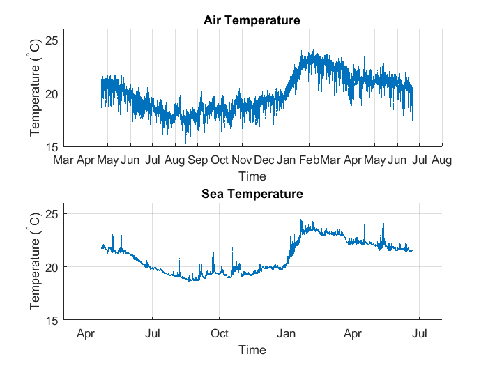
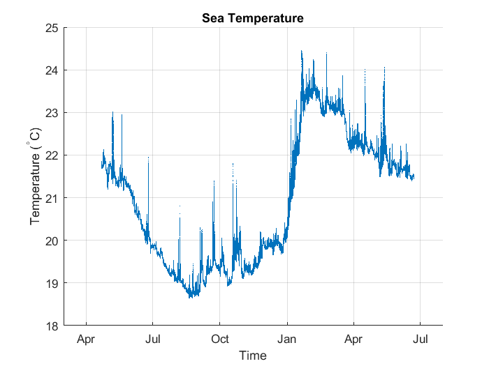
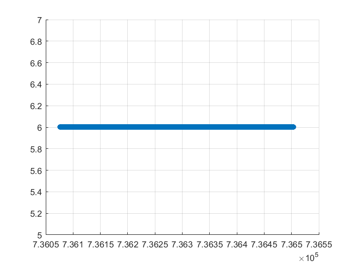
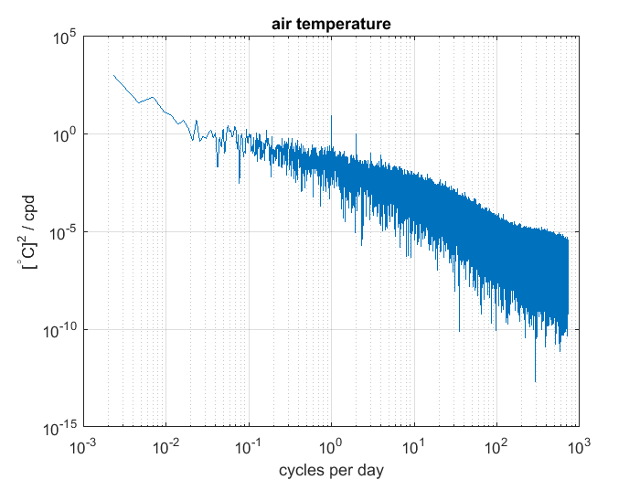
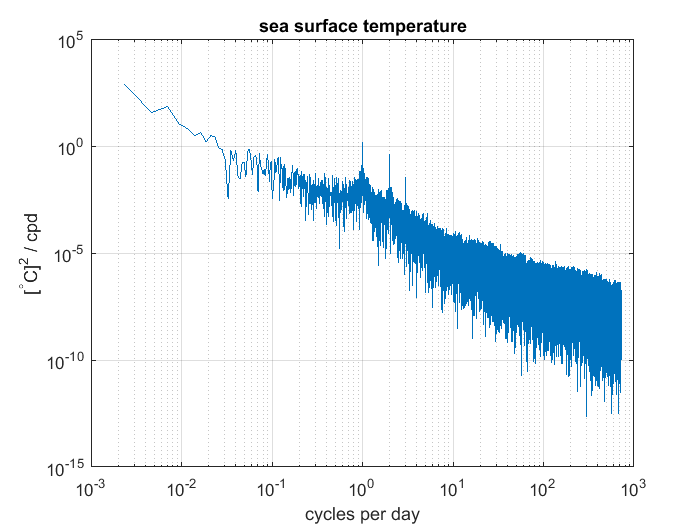
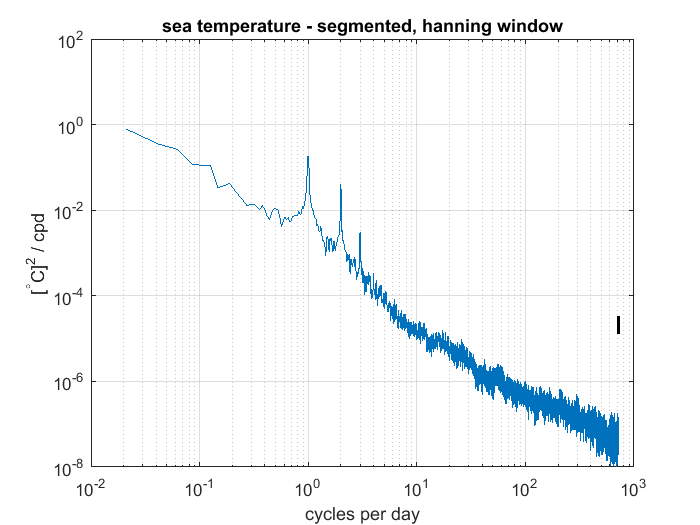
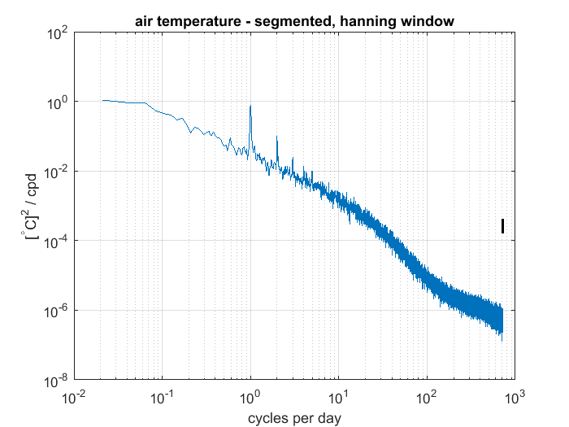
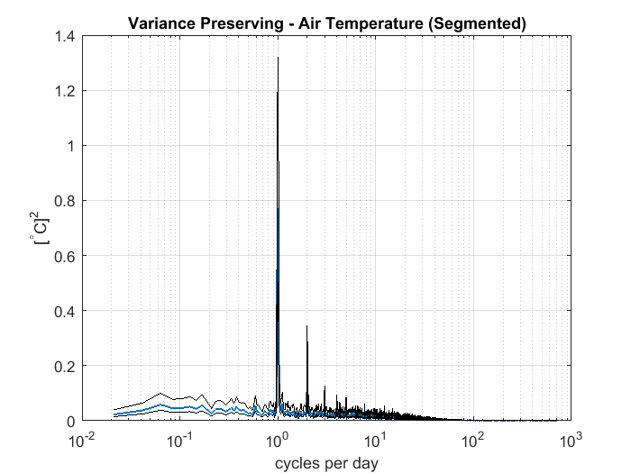
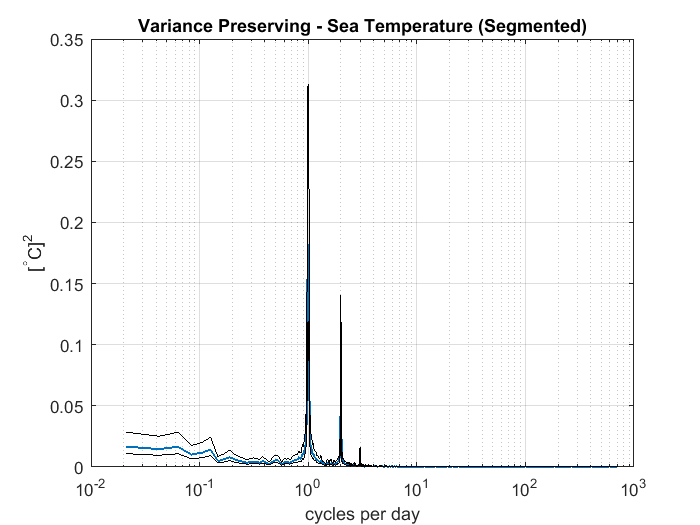

Contents
Ren_data1_week7.m
midterm
data from Stratus mooring program
A. Ren, November 21, 2017
load file
filename = './OS_Stratus_2015_D_M.nc';
seawaterdata = ncread(filename, 'TEMP');
airtempdata = ncread(filename, 'AIRT');
timedata = ncread(filename, 'TIME');
heightair = ncread(filename, 'HEIGHT_RHAT');
heightsea = ncread(filename, 'DEPTH');
edit/add time variables
baseday = datenum(1950, 1, 1);
multby = baseday * ones(size(timedata, 1), size(timedata, 2));
timemtlb = multby + timedata;
timemtlb_dt = datetime(timemtlb, 'ConvertFrom', 'datenum');
Plot time series of air temp and sst from file
figure('Name', 'TimeSeries Plots')
subplot(2, 1, 1)
scatter(timemtlb, airtempdata, 1, 'filled')
title('Air Temperature')
grid on
datetick('x', 3)
xlabel('Time')
ylabel('Temperature (^{\circ}C)')
ylim([15 26])
xlim([datenum(2015, 3, 1) datenum(2016, 8, 1)])
subplot(2, 1, 2)
scatter(timemtlb, seawaterdata, 1, 'filled')
title('Sea Temperature')
datetick('x', 3)
grid on
datetick('x', 3)
xlabel('Time')
ylabel('Temperature (^{\circ}C)')
ylim([15 26])
xlim([datenum(2015, 3, 1) datenum(2016, 8, 1)])

check spikes
figure('Name', 'Sea')
scatter(timemtlb, seawaterdata, 1, 'filled')
title('Sea Temperature')
datetick('x', 3)
grid on
datetick('x', 3)
xlabel('Time')
ylabel('Temperature (^{\circ}C)')
xlim([datenum(2015, 3, 1) datenum(2016, 8, 1)])

error checking
sum(isnan(airtempdata))
sum(isnan(seawaterdata))
chd = diff(timemtlb);
estd = floor(chd*10000);
figure('Name', 'Gap between time increments - scaled')
scatter(timemtlb(2:end), estd)
grid on
ans =
0
ans =
0

Fourier Transform - first try without segmenting
air_dm = airtempdata - mean(airtempdata);
sea_dm = seawaterdata - mean(seawaterdata);
A_air = fft(air_dm);
N = length(A_air);
amp_A_air = abs(A_air( 1:(N+1)/2 ) ).^2;
amp_A_air(2:end) = 2*amp_A_air(2:end);
alpha = 6.9444e-04;
amp_A_air = amp_A_air* alpha/N ;
scale = 1/60 *3600*24;
frequencyaxis = scale*(0:(N/2))/N;
figure('Name', 'Full Air Temperature')
loglog(frequencyaxis, amp_A_air)
grid on
title('air temperature')
ylabel('[^{\circ}C]^{2} / cpd')
xlabel('cycles per day')
A_sea = fft(sea_dm);
N = length(A_sea);
amp_A_sea = abs(A_sea( 1:(N+1)/2 ) ).^2;
amp_A_sea(2:end) = 2*amp_A_sea(2:end);
amp_A_sea = amp_A_sea* alpha/N;
figure('Name', 'Full SST')
loglog(frequencyaxis, amp_A_sea)
grid on
title('sea surface temperature')
ylabel('[^{\circ}C]^{2} / cpd')
xlabel('cycles per day')
 
Fourier Transform - with segments
airtemp = airtempdata(1:end-1);
nosegs = 9;
dataperseg = length(airtemp)/nosegs;
airtemp = reshape(airtemp, [dataperseg, nosegs]);
seatemp = seawaterdata(1:end-1);
seatemp = reshape(seatemp, [dataperseg, nosegs]);
startinc = dataperseg/2;
indexlist = startinc+1:dataperseg:length(airtempdata)-dataperseg;
for i = 1:length(indexlist)
overlapseg(:, i) = airtemp(indexlist(i):indexlist(i)+dataperseg-1)';
end
airtemp = [airtemp overlapseg];
for i = 1:length(indexlist)
overlapseg(:, i) = seatemp(indexlist(i):indexlist(i)+dataperseg-1)';
end
seatemp = [seatemp overlapseg];
seatemp = detrend(seatemp);
airtemp = detrend(airtemp);
airtemp_f = airtemp.* (hann(dataperseg)*ones(1, size(airtemp, 2)));
seatemp_f = seatemp.* (hann(dataperseg)*ones(1, size(seatemp, 2)));
A_airtemp_f = fft(airtemp_f);
A_seatemp_f = fft(seatemp_f);
constantHanning = sqrt(8/3);
A_airtemp_f = A_airtemp_f * constantHanning;
A_seatemp_f = A_seatemp_f * constantHanning;
calculate spectra
NN = dataperseg;
amp_airtemp_f = abs(A_airtemp_f(1:(NN/2) + 1, :)).^2 ;
amp_airtemp_f(2:end-1, :) = 2*amp_airtemp_f(2:end-1, :);
alpha = 6.9444e-04;
amp_airtemp_f = amp_airtemp_f * alpha/NN;
amp_seatemp_f = abs(A_seatemp_f(1:(NN/2) +1, :)).^2 ;
amp_seatemp_f(2:end-1, :) = 2*amp_seatemp_f(2:end-1, :);
amp_seatemp_f = amp_seatemp_f * alpha/NN;
amp_airtemp_f_m = mean(amp_airtemp_f, 2);
amp_seatemp_f_m = mean(amp_seatemp_f, 2);
frequency_filt = scale* (0:NN/2)/NN;
error bar
assume degrees of freedom is the number of segments and overlapping
segments used; 9 + 8 = 17. This is also size(airtemp, 2).
totalindepseg = 17;
dof = 2*totalindepseg;
err_high = dof/chi2inv(0.05/2, dof);
err_low = dof/chi2inv(1-0.05/2, dof);
plots with errorbar
figure('Name', 'Sea Temperature - segmented w/errorbar')
loglog(frequency_filt, amp_seatemp_f_m)
hold on
loglog([frequency_filt(end) frequency_filt(end)], ...
([err_low err_high]*amp_seatemp_f_m(end) * 1000), 'k', 'LineWidth', 1.8)
grid on
ylim([1e-8 1e2])
ylabel('[^{\circ}C]^{2} / cpd')
xlabel('cycles per day')
title('sea temperature - segmented, hanning window')
figure('Name', 'Air Temperature - segmented w/ errorbar')
loglog(frequency_filt, amp_airtemp_f_m)
hold on
loglog([frequency_filt(end) frequency_filt(end)], ...
([err_low err_high]*amp_airtemp_f_m(end) * 1000), 'k', 'LineWidth', 1.8)
grid on
ylabel('[^{\circ}C]^{2} / cpd')
xlabel('cycles per day')
title('air temperature - segmented, hanning window')
 
verify Parseval's theorem
for unsegmented data case -- same normalization used for segmented case
disp('air - full data'); std(air_dm)^2
disp('air - full - FFT'); std(amp_A_air)^2
disp('SST - full data'); std(sea_dm)^2
disp('SST - full - FFT'); std(amp_A_sea)^2
disp('segmented data:')
v1 = std(airtemp).^2; disp('Air'); mean(v1)
v2 = std(seatemp).^2; disp('SST'); mean(v2)
v1 = std(amp_airtemp_f).^2; disp('Air FFT'); mean(v1)
v2 = std(amp_seatemp_f).^2; disp('SST FFT'); mean(v2)
air - full data
ans =
2.7273
air - full - FFT
ans =
2.6911
SST - full data
ans =
2.1899
SST - full - FFT
ans =
1.9848
segmented data:
Air
ans =
0.2757
SST
ans =
0.0726
Air FFT
ans =
2.9576e-04
SST FFT
ans =
9.4053e-05
variance preserving spectra
multiply by frequency (spectra and the errorbar)
figure('Name', 'Variance Preserving')
semilogx(frequency_filt, frequency_filt' .* amp_airtemp_f_m, 'LineWidth', 1.1)
hold on
semilogx([frequency_filt(:)], ...
([err_high].*amp_airtemp_f_m(:).*frequency_filt(:)), ...
'k', 'LineWidth', 0.3)
semilogx(frequency_filt(:),...
(err_low.*amp_airtemp_f_m(:).*frequency_filt(:)), ...
'k', 'LineWidth', 0.3)
grid on
ylabel('[^{\circ}C]^{2}')
xlabel('cycles per day')
title('Variance Preserving - Air Temperature (Segmented)')
figure('Name', 'Variance Preserving')
semilogx(frequency_filt, frequency_filt' .* amp_seatemp_f_m, 'LineWidth', 1.1)
hold on
semilogx([frequency_filt(:)], ...
([err_high].*amp_seatemp_f_m(:).*frequency_filt(:)), ...
'k', 'LineWidth', 0.3)
semilogx(frequency_filt(:),...
(err_low.*amp_seatemp_f_m(:).*frequency_filt(:)), ...
'k', 'LineWidth', 0.3)
grid on
ylabel('[^{\circ}C]^{2}')
xlabel('cycles per day')
title('Variance Preserving - Sea Temperature (Segmented)')
 